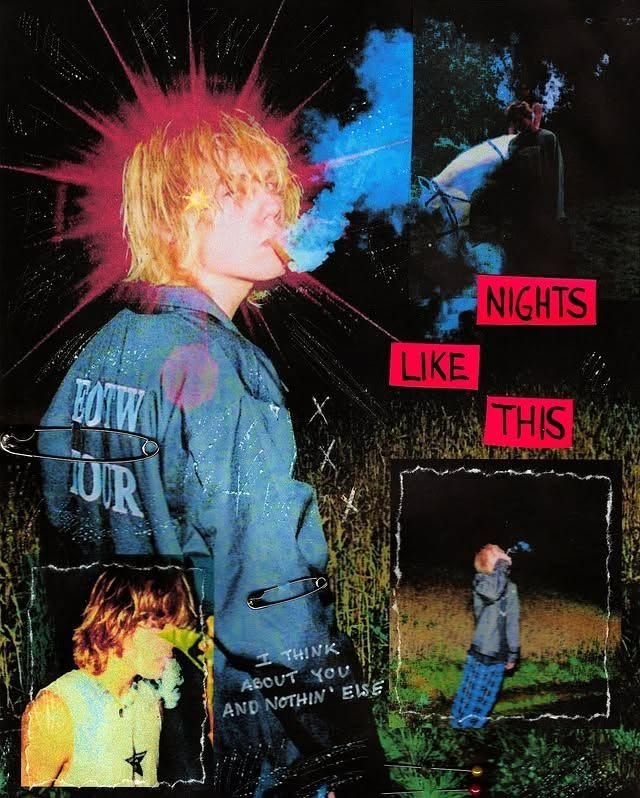
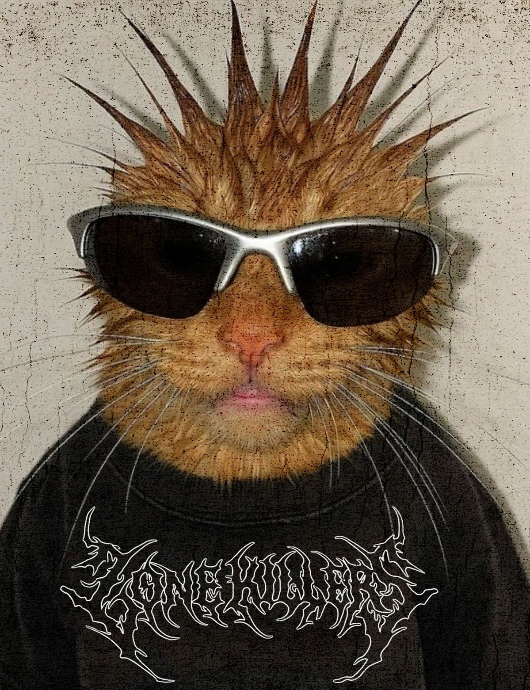

Orígenes del Grunge
El Grunge nació a mediados de los años 80 en el noroeste de los Estados Unidos, teniendo a Seattle como su epicentro absoluto. Emergión no como un producto estético planificado por la industria de la moda, sino como una respuesta cruda, nihilista y contracultural al pop plástico y el glam metal corporativo que dominaban la radio. Estrechamente ligado a la música rock alternativa, el sonido combinaba la distorsión pesada del punk y el sludge metal con letras cargadas de angustia existencial, alienación e inconformismo.
Cronología y Expansión Cultural
• Mid 1980s — El sonido underground: El sello independiente Sub Pop comenzó a documentar bandas locales de Washington como Green River, Mudhoney y Soundgarden. Desarrollaron un sonido sucio, crudo y directo. El uniforme de los músicos era simplemente la ropa funcional que usaban los trabajadores e ingenieros de las fábricas del clima frío y lluvioso de Seattle.
• 1991 — El estallido global: Con el lanzamiento del álbum Nevermind de Nirvana y el éxito masivo del sencillo "Smells Like Teen Spirit", el movimiento destrozó las barreras del circuito comercial. Bandas como Pearl Jam, Alice in Chains y Stone Temple Pilots redefinieron la cultura juvenil global de la Generación X de la noche a mañana.
• 1992 - 1993 — La apropiación de la alta costura: La industria de la moda asimiló el "anti-estilo" de las calles. Marc Jacobs presentó su famosa e icónica colección "Grunge" para la casa de modas Perry Ellis en 1992, subiendo camisas de franela a cuadros, botas de combate y vestidos desaliñados a las pasarelas de alta costura, consolidando el impacto visual del movimiento.
Los Antecedentes y Filosofía Estética
A diferencia de otras subculturas de diseñador, la estética del Grunge se basa firmemente en el rechazo al consumo masivo, adoptando tres principios fundamentales:
- La deconstrucción del uniforme obrero: El uso masivo de sobrecamisas de franela (plaid shirts), botas de trabajo pesadas (Dr. Martens) y jeans rotos provino directamente del estilo de vida de la clase trabajadora del noroeste americano.
- El rechazo a la vanidad: El cabello desaliñado, las prendas intencionalmente desgastadas, descoloridas o sobredimensionadas (oversized) proyectaban apatía hacia los estándares comerciales de belleza.
- Cultura de Segunda Mano (Thrifting): La ropa se compraba en tiendas de caridad o saldos por necesidad económica y postura anti-capitalista, mezclando capas de ropa sin un orden lógico.
Identidad Textil e Indumentaria
En el diseño de indumentaria, el guardarropa grunge se define por la funcionalidad cómoda y el desaliño calculado. Las texturas son pesadas, ásperas y reales: telas térmicas de gofre, lana pesada gastada, mezclilla tosca rota y franela cepillada.
Las piezas clave se componen por la **superposición de capas (layering)**, combinando camisetas gráficas de bandas underground debajo de camisas de cuadros abiertas, jeans desgastados de corte recto o siluetas amplias, vestidos tipo slip de satén combinados de forma contrastante con botas de combate militares rudas, y suéteres de punto oversized rasgados que cuelgan del cuerpo de manera holgada.

